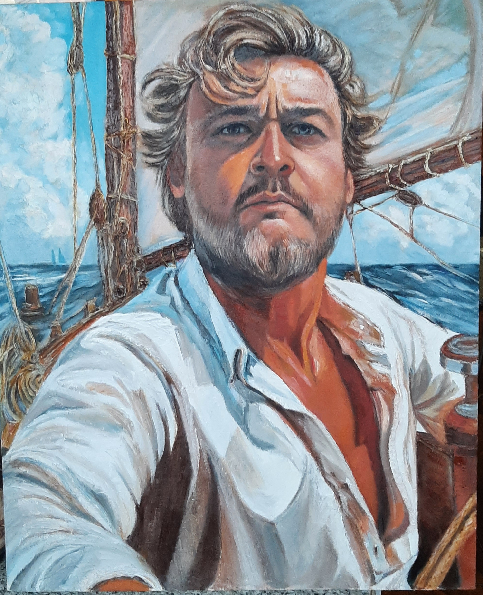

Это образ лидера, первопроходца и человека с несгибаемой силой воли
57x70 см.
57х70 см, холст на арт-борде, масло, текстурная паста, лак.
Эта картина — образец мужественного, харизматичного портрета, который идеально подходит для демонстрации потенциальным клиентам. Она наглядно показывает, как обычную фотографию заказчика можно превратить в кинематографичный арт-объект с сильным мужским характером. Это образ лидера, первопроходца и человека с несгибаемой силой воли. Он не боится жизненных штормов, умеет держать удар и уверенно управляет кораблем своей судьбы. Морские просторы, мачты и канаты подчеркивают свободолюбивый нрав персонажа. Это мужчина, для которого рутина слишком тесна, его стихия — масштабные цели, риск и победы. Такой портрет — это не просто копия фотографии, а художественное заявление. Он подчеркивает лидерские качества мужчины, его авторитет, силу и харизму, делая картину идеальным украшением для личного кабинета, библиотеки или загородного дома. Индивидуальная адаптация под хобби: Образ легко адаптировать под увлечения конкретного заказчика: охота, авиация, горы, автоспорт или историческая стилизация. Техника живописи позволяет органично соединить реалистичное лицо с любым сложным, динамичным фоном.